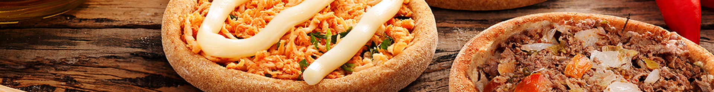
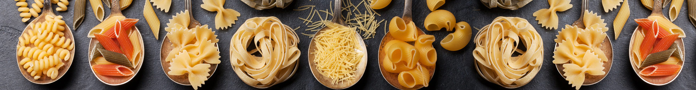
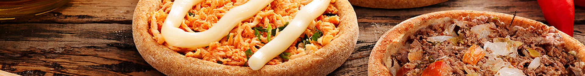
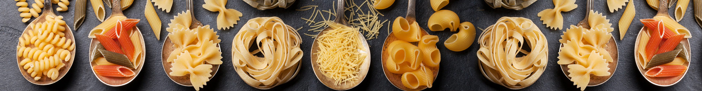
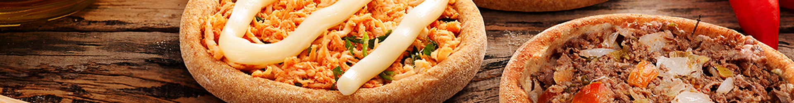
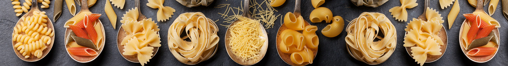

Do mais simples ao mais complexo.



De origem italiana, a palavra risotto significa, literalmente, “pequeno arroz” ou “arrozinho”. Assim como a maior parte dos pratos que surgiram há muito tempo, existem várias histórias e lendas sobre a origem do risoto.
O primeiro passo será a preparação do caldo. Pegue 500 ml de água e coloque os rabos de camarão, cascas de cebola e alho e leve ao fogo para ferver por uns 30 minutos
Começando o risoto, esquente a frigideira, bote a manteiga e o azeite, pique a cebola e o alho, frite-os até ficarem dourados.
Adicione o arroz arbóreo, frite o arroz até absorver a gordura por completo, após adicione o vinho branco, e mexa até que evapore todo o álcool.
Adicione aos poucos o caldo, e sempre mantenha-o com água, misture até ficar al dente.(DETALHE, sempre fique mexendo o arroz, pois é importante que solte o amido, para ficar com a textura certa).
Para o camarão, bote sal, um temperinho a gosto para deixar-lo saboroso, e o suco do limão e deixe um pouco nessa mistura.
Adicione o parmesão ralado e misture bem. Adicione também o camarão frito, o sal, pimenta e a salsinha.
Eu particularmente, prefiro o arroz entre al dente e bem cozinho, para ele ficar com uma textura dura por dentro, mas macio por fora. Muitos preferem ele bem ao dente, assim como também tem quem prefira ele bem molinho, então é bem relativo o ponto do arroz.